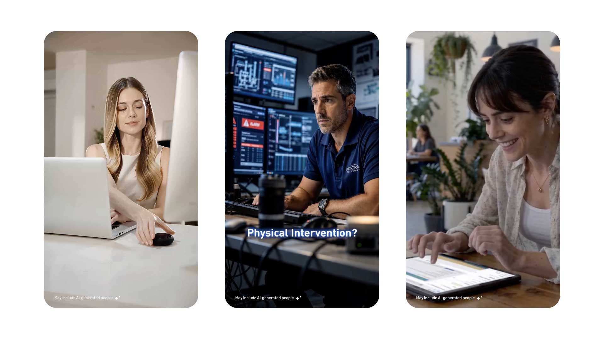
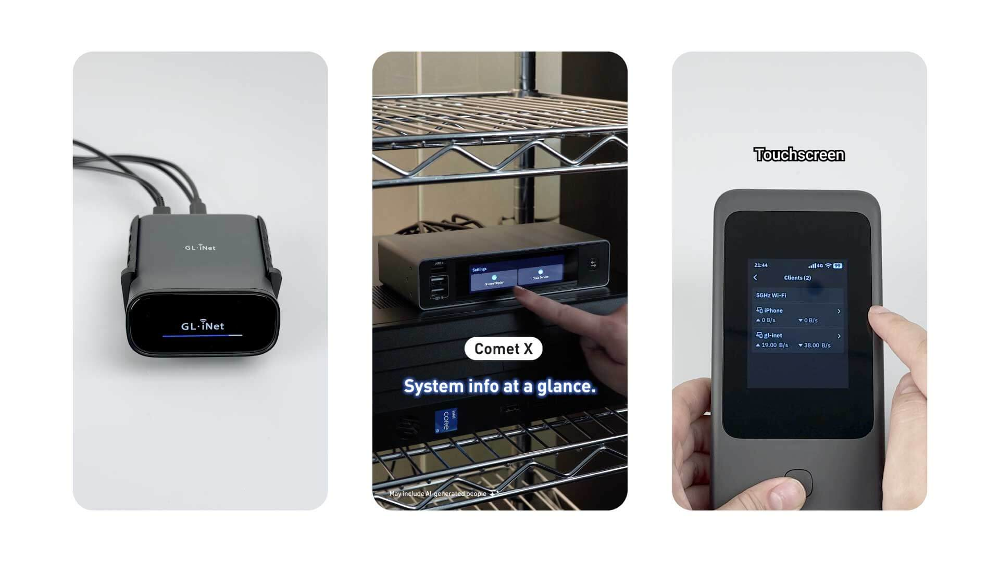
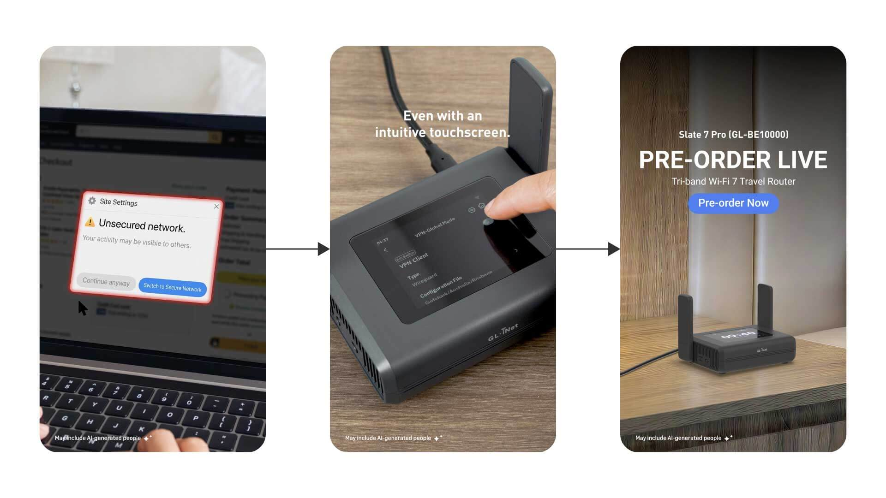
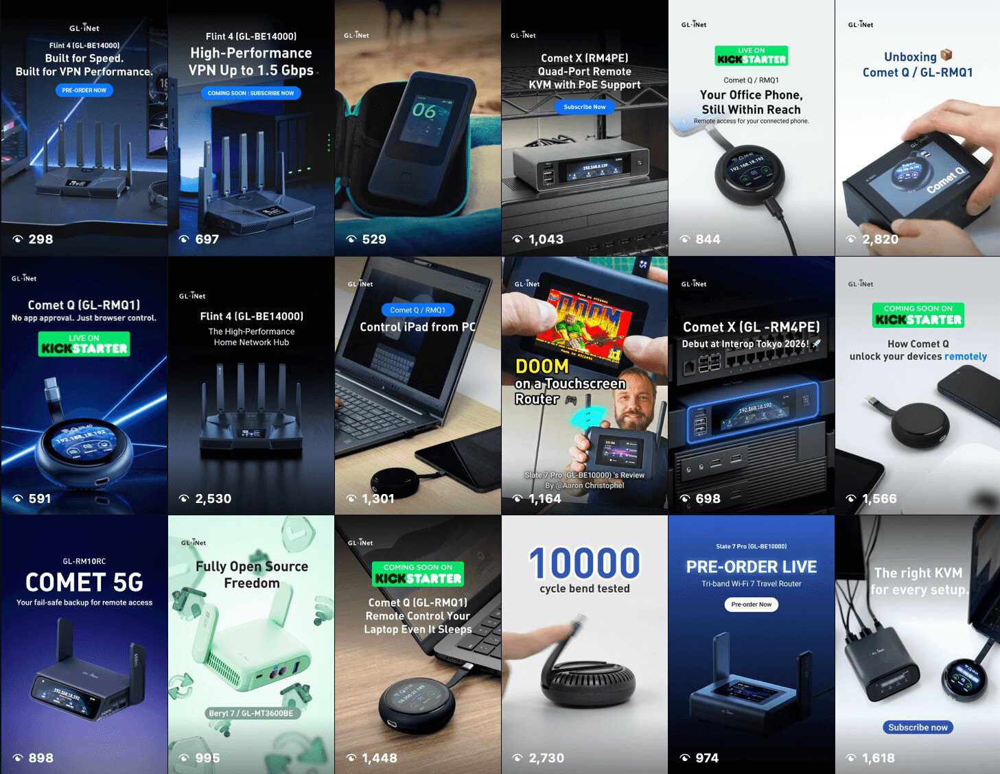

Reels Video
Demonstrates products in real-world scenarios, emphasizing core features to attract potential buyers.
Overview
Short-form vertical videos for Instagram Reels on @gl.inet — product stories built around clear topics rather than one fixed template. Each reel promotes a feature, use case, or seasonal offer, mixing real product footage with AI-generated scenes when a concept needs a setting that is hard or costly to film.
Focus
Make each reel land fast: one topic, one benefit, one reason to pause — using real product shots or AI scenarios when a setting is hard to film.
Topic-led promotion
Each reel starts from a theme: travel Wi‑Fi, home security, sales event, unbox, or a single feature.
Real + unreal
Hands-on product and lifestyle shots where possible; AI-generated environments when the story needs a scenario that is impractical to film.
Feature clarity
One or two benefits per reel — VPN, repeater, Wi‑Fi 7, portability — with captions and voiceover.
Social-native
9:16, hook in the first second, pacing for the feed, cover frame that matches the wider social post system.
Topic strategy
Instead of repeating the same product shot, reels are planned as a series of topics that map to how people actually use (or imagine using) the devices. That keeps the @gl.inet feed varied and gives marketing clear hooks for captions and hashtags.
Travel & on the go
Hotel Wi‑Fi, pocket routers, repeater mode — product in bags, cars, and temporary setups.
Home & desk
Always-on gateways, VPN, parental controls — calm indoor scenes and UI moments.
Feature deep-dives
One capability per reel (e.g. multi-WAN, remote access) explained with graphics and short demos.
Seasonal & offers
Black Friday, launches, and stock-driven campaigns — price, model, and CTA in the first frames.
AI generated scenarios
Some product stories need a setting that is expensive, or impossible to shoot — a storm, a remote mountain cabin, a futuristic city, a crowded airport that cannot be booked for a half-day. AI tools are used to generate those environments and moments, then composited with real product plates, motion graphics, and brand type so the feature still reads as the hero.
The goal is not to replace product photography, but to expand the range of “what if” stories: how the router behaves when the network fails, how travel gear fits a lifestyle that is hard to stage, how a feature feels in an extreme or stylized world. Unreal scenes stay clearly in service of the product message.


Format
Vertical 9:16, typically 15–30 seconds. Opening frame is the hook (topic or benefit); middle is product, scenario, or AI beat; close is CTA or offer. Safe margins keep text clear of Instagram UI.

Production
Videos mixes live product and lifestyle footage, and After Effects for type, icons, and feature callouts. Editing favors tight hooks, jump cuts, and captions that work with sound off.
Plan
- Topic & benefit
- Real vs AI needs
- Hook & CTA
Produce
- Film product / lifestyle
- Generate AI scenes
- Graphics & captions
Ship
- Vertical edit
- Cover frame
- Instagram Reels
Publish
Finished reels go to the GL.iNet Instagram account and related regional handles. Cover frames and on-screen text align with the broader social media post system so feed and Reels feel like one brand.

Outcome
A library of topic-driven Instagram Reels for GL.iNet — real product demos, seasonal offers, and AI-assisted scenarios that introduce features in settings that would be hard to stage, all optimized for short-form discovery.